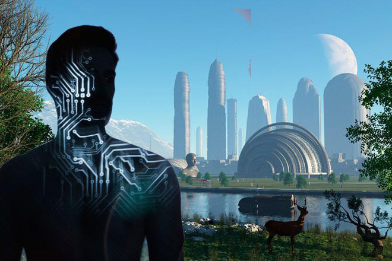
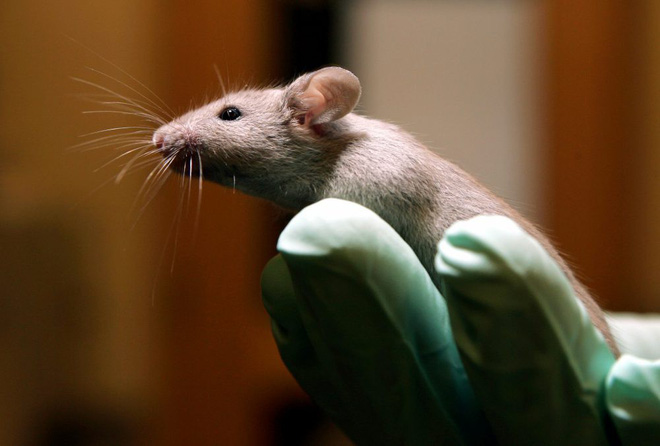
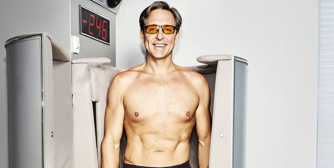

Đi tìm sự bất tử lại có thể là con đường dẫn chúng ta tới bờ vực diệt vong.
Những con người xây dựng lên Thung lũng Silicon, họ nghĩ rằng công nghệ có thể giúp chúng ta tối ưu hóa mọi khía cạnh trong cuộc sống con người. Tối ưu hóa có thể hiểu là "hack", bất kỳ khía cạnh nào trong cuộc sống bao gồm cả tuổi thọ của con người.
Vậy thì một ngày nào đó, chúng ta liệu có thể sử dụng công nghệ để bất tử?
Đã từng có một thời kỳ, trường sinh trở thành một nỗi ám ảnh không dứt trong đầu những bậc đế vương quyền lực. Con người đã khao khát, đã nỗ lực, nhưng những thất bại liên tiếp trong hàng ngàn năm đã khiến chúng ta không còn tin vào một phương thuốc thần kì như vậy nữa.
Cách mạng khoa học công nghệ của thế kỷ 19 đã biến bất cứ ai rao bán một viên thuốc hoặc một phương pháp điều trị - hứa rằng nó sẽ giúp bạn khôi phục lại sự trẻ trung của mình - thành một kẻ lang băm.
Nhưng cũng chính khoa học công nghệ ấy, của thế kỷ 21, lại đang khiến chúng ta phải suy nghĩ lại.
Ngày càng có nhiều người tin rằng, con người đang tiến tới một nền tảng y sinh mà ở đó, những phương pháp tân tiến có thể khắc phục được mọi vấn đề, từ ung thư cho đến sự lão hóa tự nhiên và giúp chúng ta kéo dài tuổi thọ.
Bây giờ, chúng ta đã nắm trong tay nhiều công nghệ đầy quyền năng như chỉnh sửa gen, khoa học nano và robot. Những nhà sử học tương lai kỳ vọng rằng không lâu nữa chúng sẽ cho phép con người "hack" vào hệ thống sinh học của chính mình, đi tìm những mã code để tăng gấp đôi tuổi thọ.
Aubrey de Gray, một nhà nghiên cứu y học tái tạo được hỗ trợ bởi ông trùm công nghệ Peter Thiel, từng khẳng định rằng: Trong thế hệ những người đang sống ngày hôm nay, sẽ có ít nhất một người sống tới năm 1.000 tuổi. "Tôi không có nổ đâu", de Gray khẳng định.
Trong khi đó, Joon Yun, một bác sĩ và nhà tài chính người Hàn Quốc đã treo một giải thưởng trị giá 500.000 USD cho bất kỳ ai có thể làm trẻ hóa trái tim một con chuột, từ đó kéo dài 50% tuổi thọ cho nó.
Yun lập luận rằng, khi ở tuổi 20 tỷ tỷ lệ tử vong của con người chỉ là 0,001%. "Vậy, nếu bạn có thể duy trì khả năng cân bằng nội môi ở độ tuổi này trong suốt cuộc đời, bạn có thể sống tới năm 1.000 tuổi".
Nhưng làm thế nào để đạt tới điều đó?
Đây xứng đáng là một câu hỏi triệu đô. Mặc dù chưa thể trả lời trọn vẹn, các nhà nghiên cứu tại Trường Y Harvard biết rằng họ nên bắt đầu tìm manh mối từ đâu.
Khi tuổi tác lớn dần lên, con người thường giảm phát triển các mạch máu trong cơ bắp. Đó được cho là nguyên nhân khiến các cơ quan trong cơ thể bị thoái hóa. Điều này cũng xảy ra với những con chuột.
Năm 2018, các nhà nghiên cứu Harvard đã cho một số con chuột thí nghiệm ăn một loại hóa chất. Khi đi vào cơ thể, hóa chất này sẽ tác động đến gen điều khiển sự phát triển của mạch máu.
Bằng cách giữ lại khả năng hình thành mạch máu mới trong cơ bắp, những con chuột già trong nghiên cứu đã có thể chạy trên máy chạy bộ lâu hơn 56%.
Liệu đó có phải là một dấu hiệu trẻ hóa? Các nhà khoa học vẫn còn phải tiếp tục nghiên cứu. Trong khi đó bên ngoài phòng thí nghiệm của họ, một ngành thực phẩm chức năng mới đã hình thành. Những người "hack" sinh học đang bán những viên "thuốc thông minh", chứa axit amin và nhiều hợp chất khác.
Chúng được quảng cáo là sẽ giúp bạn tăng cường khả năng nhận thức và ngăn ngừa lão hóa não. Thị trường của những viên thuốc này dự kiến sẽ đạt tới 11 tỷ USD vào năm 2024.
Nhưng làm thế nào để đạt tới điều đó?
Ở tuổi 45, Dave Asprey, nhà sáng lập Bulletproof Coffee, tự tin tuyên bố rằng anh ta sẽ sống ít nhất đến năm 180 tuổi. Năm ngoái, Asprey đã trải qua một thủ thuật đặc biệt, trong đó các bác sĩ đã trích xuất tế bào gốc từ tủy xương của anh, rồi tiêm chúng vào các cơ quan và khớp khác trên khắp cơ thể.
Asprey nói rằng anh ấy sẽ làm điều này 2 lần mỗi năm, với niềm tin nó sẽ giúp anh trẻ hóa được cơ thể với các tế bào hoàn toàn mới của chính mình. Chưa dừng lại ở đó, Asprey cũng uống tới 100 loại thực phẩm chức năng mỗi ngày.
Trong ngôi nhà của mình ở Canada, anh ta mua về nhiều thiết bị kỳ lạ như buồng oxy cao áp và một chiếc máy rung tần số cao có thể kích thích cơ bắp lên tới 30 lần mỗi giây. Tất cả những phương pháp này được Asprey đặt niềm tin, rằng chúng sẽ kéo dài cuộc sống được cho anh.

Nhưng Asprey không phải người duy nhất có ý tưởng ấy. Ở Thung lũng Silicon, nhiều ông trùm như Larry Ellison, đồng sáng lập tập đoàn Oracle cũng cho rằng việc con người phải chết là "không thể hiểu nổi".
Cả Google và Facebook đều đang đầu tư vào các công nghệ giúp con người gia tăng tuổi thọ. Trong khi đó, giám đốc điều hành Tesla, Elon Musk đã thành lập Neuralink để phát triển các cấy ghép kỹ thuật số cho bộ não.
Nếu chúng ta không sử dụng công nghệ để tăng cường khả năng nhận thức của con người, đến một ngày nào đó trí tuệ nhân tạo sẽ đánh bại lại chúng ta, Musk nói.
Lĩnh vực này đang phát triển mạnh đến thế nào?
Tại Mỹ có một hội nghị thường niên gọi là BDYHAX. Được tổ chức mỗi năm một lần tại Austin, Texas, đây là nơi quy tụ sự chú ý của hàng chục ngàn người, từ những doanh nhân cho đến người lập dị, có chung một mối quan tâm: "bio-hack" cơ thể để cải thiện khả năng của con người.
Nhiều người trong số này thậm chí đã đang thử nghiệm những công nghệ chỉnh sửa gen như CRISPR trên chính bản thân mình. Trở ngại lớn nhất đối với lĩnh vực hack sinh học, de Gray nói, đó là "sự hiểu lầm phổ biến về bản chất của cuộc thập tự chinh này".
Trong một cuộc khảo sát năm 2016, 69% người Mỹ cho biết họ phản đối việc sử dụng chip gắn trong não để cải thiện khả năng nhận thức, và 63% phản đối sử dụng máu nhân tạo để giúp mọi người khỏe mạnh và nhanh nhẹn hơn.
Cuộc thăm dò cho thấy phần đông nhân loại chưa tin tưởng vào những công nghệ cải tiến sinh học cơ thể. Họ kêu gọi sử dụng chúng một cách có trách nhiệm và an toàn.
Các nhà khoa học có tham gia vào công cuộc vĩ đại này không?
Tại thời điểm này, hầu hết các nhà khoa học đều hoài nghi hoặc kiên quyết phản đối ý tưởng giúp con người trở thành bất tử.
Giáo sư Richard Miller đến từ Đại học Michigan đã viết một bài báo, được ký tên ủng hộ bởi 28 chuyên gia lão hóa khác, gọi mục tiêu trọn đời của de Grey là "rất bất khả thi, khi nó không tôn trọng những gì mà cộng động khoa học đã thống nhất".
Thực tế khoa học nói gì? Mặc cho các tiến bộ trong y học thời gian gần đây, người sống thọ nhất trong số chúng ta mới chỉ đạt tới ngưỡng xấp xỉ 120 tuổi. Điều này đã khiến nhiều chuyên gia tin rằng đó là giới hạn về mặt sinh học của tuổi thọ con người.
Liệu tất cả mọi người đều muốn đi tìm sự bất tử?
Câu trả lời là: Không. Trong khi những "bio-hacker" nói rằng họ đang đẩy nhanh quá trình tiến hóa, nhiều nhà đạo đức học tin rằng bằng cách hack cơ thể và đi tìm sự bất tử, một trụ cột nào đó trong thế giới quan của con người đang bị đe dọa.
Nhà khoa học chính trị Francis Fukuyama thậm chí tuyên bố phong trào "siêu nhân hóa" là một trong những mối đe dọa nghiêm trọng nhất đối với nhân loại - không chỉ vì những hậu quả tai hại tiềm tàng của các phương pháp bio-hack khi chúng thất bại, mà còn vì cả khả năng khi chúng được sử dụng thành công.
Hãy tưởng tượng nếu những giấc mơ siêu nhân hóa và bất tử trở thành sự thật, nó sẽ tạo ra một cộng đồng nhỏ những người có khả năng vượt trội hơn đa số nhân loại còn lại. Kéo theo đó sẽ là những bất công, là sự tranh giành quyền lực, thậm chí những cuộc chiến đẫm máu.
"Chúng ta cần suy nghĩ về những tác động đó trước khi quá muộn", nhà đạo đức công nghệ người Anh Blay Whitby nói. Đi tìm sự bất tử lại có thể là con đường, dẫn chúng ta tới bờ vực diệt vong.